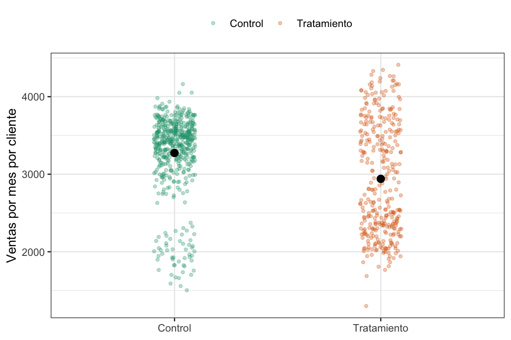
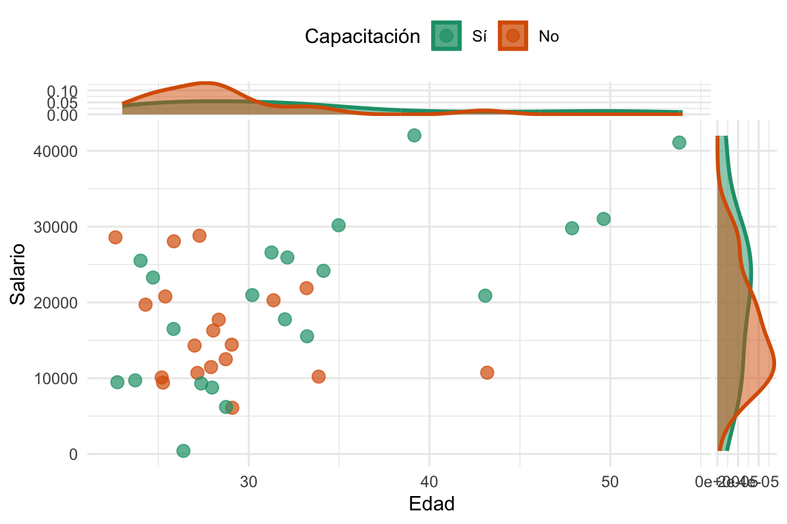

6 Subclasificación y matching
Lo que sigue no es una versi√≥n final y está e n construcci√≥n üöß
6.1 Subclasificación
6.1.1 ¿Por qué subclasificar? Motivación y objetivo
En estudios observacionales la asignación al “tratamiento” muchas veces ocurre de forma completamente no aleatoria. Por ejemplo, supongamos que queremos medir el efecto de ofrecer un descuento en la cantidad de ventas de tiendas, pero el descuento se aplicó principalmente en aquellas regiones donde las ventas siempre fueron más bajas.
Si sólo comparamos el promedio de ventas de tiendas con descuento frente a las que no lo recibieron, el resultado estará sesgado, porque la asignación del “tratamiento” (el descuento) no fue aleatoria. Es decir, el efecto reflejará tanto el descuento como las características de la región.
El objetivo de la subclasificación es, entonces, estimar el efecto causal del descuento como si la asignación hubiera sido aleatoria dentro de cada región. Para ello, se divide el conjunto de tiendas en estratos según la región, se calcula la diferencia de ventas entre tiendas con y sin descuento en cada estrato, y luego se combinan esos efectos de forma ponderada. De este modo, se logra balancear la comparación y acercarse a un estimador no sesgado del efecto promedio del descuento.
6.1.2 Independencia vs. independencia condicional
Hablamos de independencia, cuando tenemos un experimento con asignación completamente aleatoria:
\[ D \perp (Y_0,Y_1) \]
Es decir, la decisión de asignar a tratamiento o no (D) es independiente de los potential outcomes, y por lo tanto la diferencia de medias entre tratados y controles ofrece una estimación válida del ATE.
Sin embargo, en muchos cuasiexperimentos la “aleatorización” sólo ocurre condicional a alguna característica observable X. Esto nos lleva a la asunción de independencia condicional (CIA1), que podemos escribir como:
1 Del inglés Conditional Independence Assumption.
\[ D \perp (Y_0,Y_1) | X \]
O sea, una vez que fijamos X, la asignación al tratamiento se comporta como si fuera aleatoria.
En estudios observacionales como el de las tiendas y descuentos, la región (X) influye tanto en la probabilidad de recibir descuento (\(D\)) como en las ventas (\(Y\)), lo que genera un camino en el que \(X\) es confusor (\(D \leftarrow X \rightarrow Y\)). Si ignoramos esa ruta, la comparación global de medias mezclará el efecto real del descuento con las diferencias regionales, produciendo un sesgo.
Para entender por qué la subclasificación corrige esto, podemos representar el problema en un DAG:
Al condicionar en \(X\) (es decir, subclasificar o estratificar por región), cerramos el backdoor \(D \leftarrow X \rightarrow Y\). Dentro de cada región, la asignación del descuento ya no está correlacionada con las ventas antes del tratamiento.
6.1.3 Supuestos (scott explica 1.CIA y 2.Soporte común)(es necesario?)
6.1.4 El estimador de subclasificación: Un ejemplo con descuento
¿Cómo aplicamos esta idea de la subclasificación a un ejemplo real? Bueno, empecemos con un ejemplo “real”.
Supongamos que tenemos una distribuidora de gaseosas en el Gran Buenos Aires. Queremos medir el efecto de ofrecer un descuento a los clientes en las ventas. Este es un descuenta que se le da sólo a algunos clientes, pero sabemos que la asignación del descuento es aleatoria, pero sólo dentro de cada región. Esto pasó porque el jefe, muy astutamente dijo “¿Y si les ofrecemos más descuentos a la región que menos compra?”. Los clientes que menos compran son los del oeste(compra promedio $\(2000\)), y por eso tienen una \(p=0.8\) de recibir el descuento. Los del norte (compra promedio $\(3500\)) tienen una \(p=0.2\) y los del este (compra promedio $\(3000\)) una \(p=0.5\). También es relevante para el problema que algunas zonas tienen más clientes que otras, por ejemplo, el oeste tiene \(220\) clientes, el norte \(500\) y el este sólo \(130\).
Como todas las simulaciones que hicimos a lo largo del libro (si es que a esto se le puede llamar libro) conocemos el tamaño del efecto que queremos estimar y tiene como valor medio $\(300\). Otra cosa a la que vamos a poder ecceder es a ambos potential outcomes, es decir, tanto al observado como al contrafáctico (si es que a esto se le puede llamar contrafáctico). Estos son lujos que nos podemos dar (si es que a esto se le puede llamar un lujo). Veamos \(5\) filas al azar de los datos simulados.
Ver el código
# Simulación de los datos ####
set.seed(1989)
n_este <- 130
n_oeste <- 220
n_norte <- 500
n_total <- n_este + n_oeste + n_norte
customers <-
tibble(
customer_id = seq(n_total),
region = c(rep("Este", n_este),
rep("Oeste", n_oeste),
rep("Norte", n_norte)),
# El efecto del tratamiento es 300USD + ruido [N(300,200)]
treatment_effect = rnorm(n_total, mean = 300, sd = 200),
# Ventas por cliente cuando no se ofrece ning'un descuento (no tratado)
y0 = c(
rnorm(n_este, mean = 3000, sd = 200),
rnorm(n_oeste, mean = 2000, sd = 200),
rnorm(n_norte, mean = 3500, sd = 200)
),
# Ventas cuando se ofrece un descuento
y1 = y0 + treatment_effect,
# El vector de asignación de tratamiento D
d = c(
rbinom(n_este, 1, 0.5),
rbinom(n_oeste, 1, 0.8),
rbinom(n_norte, 1, 0.2)
),
# Switching equation
y = y0 + treatment_effect*d
) %>%
mutate(tratamiento = if_else(d == 0, "Control", "Tratamiento"))
sample_n(customers, 5) %>%
gt::gt() %>%
gt::tab_header(
title = "Datos de clientes con descuento (5 filas al azar)"
)| Datos de clientes con descuento (5 filas al azar) | |||||||
|---|---|---|---|---|---|---|---|
| customer_id | region | treatment_effect | y0 | y1 | d | y | tratamiento |
| 241 | Oeste | 338.1579 | 1841.329 | 2179.487 | 1 | 2179.487 | Tratamiento |
| 585 | Norte | 113.7443 | 3323.805 | 3437.550 | 0 | 3323.805 | Control |
| 845 | Norte | 599.7978 | 3735.531 | 4335.329 | 0 | 3735.531 | Control |
| 347 | Oeste | 468.4059 | 2004.665 | 2473.071 | 0 | 2004.665 | Control |
| 732 | Norte | 371.6284 | 3544.635 | 3916.264 | 0 | 3544.635 | Control |
Lo primero que uno pensaría en estos casos (aunque cualquier lector o lectora de este libro podría intuir por qué es incorrecto) es en tomar los sujetos del grupo tratamiento y los del control y calcular la diferencia simple entre medias (SDO). Veamos que pinta tiene eso gráficamente y después calculemoslo.
Ver el código
customers %>%
ggplot(aes(x = tratamiento,
y = y,
color = tratamiento)) +
geom_jitter(alpha = .3, width = .1, size = 1) +
stat_summary(color = "black", width = .4) +
scale_color_brewer(palette = "Dark2") +
labs(x = NULL, y = "Ventas por mes por cliente", color = NULL) +
theme_bw() +
theme(legend.position = "top")
#> Warning in stat_summary(color = "black", width = 0.4): Ignoring unknown
#> parameters: `width`
#> No summary function supplied, defaulting to `mean_se()`
¿Pero no era que el tratamiento tenía un efecto conocido de $\(300\)? A ver, tomemos un respiro y calculemos el SDO, recordemos cómo calcularlo:
\[ SDO = \frac{1}{N_t} \sum_{i=1}^n (y_i | d_i=1) - \frac{1}{N_t} \sum_{i=1}^n (y_i | d_i=0), \]
o, en lenguaje computacional:
SDO <- mean(customers$y[customers$d==1]) - mean(customers$y[customers$d==0]).
Si lo calculamos nos da efectivamente $-334. Es decir, no sólo no vale $\(300\) sino que su valor es nmegativo, o sea, ofrecer un descuento disminuye las ventas. ¿Alguna sospecha de qué está pasando? Como vimos en el capítulo [#sec-pot-outcomes], cuando las asignaciones NO son aleatorias, no podemos asegudar que el SDO sea un buen estimador del ATE. En este caso no tenemos sesgo de efecto heterogéneo (lo sabemos porque simulamos los datos) pero qué opinan del sesgo de selección. ¿Depende acaso al asignación al grupo tratamiento de alguno de los outcome potenciales? La respuesta es un rotundo SÍ, ya que el genio del jefe, que se ve que no sabe nada de inferencia causal, decidió condicionar la asignación justamente a las ventas esperadas.
Veamos ahora las ventas para grupo tratamiento y control pero por región.
Ver el código
customers %>%
ggplot(aes(x = tratamiento,
y = y,
color = tratamiento)) +
geom_jitter(alpha = .3, width = .1, size = 1) +
stat_summary(color = "black", width = .4) +
scale_color_brewer(palette = "Dark2") +
labs(x = NULL, y = "Ventas por mes por cliente", color = NULL) +
facet_wrap(~region) +
theme_minimal() +
theme(legend.position = "top")
#> Warning in stat_summary(color = "black", width = 0.4): Ignoring unknown
#> parameters: `width`
#> No summary function supplied, defaulting to `mean_se()`
#> No summary function supplied, defaulting to `mean_se()`
#> No summary function supplied, defaulting to `mean_se()`
Apa, la cosa ahora es distinta. Tal como lo esperábamos, en cada grupo el efecto del tratamiento es un aumento en las ventas. Lo que ocurre es una combinación de sesgo de selección con el tamaño de las regiones. La región del norte, que es la más grande, tiene más sujetos asignados a control, por lo tanto, los controles tienen una sobrerepresentación de clientes que tienden a comprar más. Por el contrario, la región del oesta, que es la más chica, tiene más sujetos asignados al grupo tratamiento, lo cual genera una sobrerepresentación de ratone… clientes que gastan menos en el grupo tratamiento.
¿Se les ocurre alguna soluci√≥n elegante üé©? Claro, podemos calcular el efecto del tratamiento dentro de cada grupo (una especie de SDO local) y despu√©s vemos qu√© hacemos. Empecemos por eso.
Ver el código
SDO_este <- mean(customers$y[customers$region=="Este" & customers$d==1]) -
mean(customers$y[customers$region=="Este" & customers$d==0])
SDO_norte <- mean(customers$y[customers$region=="Norte" & customers$d==1]) -
mean(customers$y[customers$region=="Norte" & customers$d==0])
SDO_oeste <- mean(customers$y[customers$region=="Oeste" & customers$d==1]) -
mean(customers$y[customers$region=="Oeste" & customers$d==0])
tibble(Región = c("Este", "Norte", "Oeste"),
SDO = c(SDO_este, SDO_norte, SDO_oeste)) %>%
gt()| Región | SDO |
|---|---|
| Este | 320.3419 |
| Norte | 303.3541 |
| Oeste | 327.8227 |
Efectivamente el efecto en cada región se acerca a los $\(300\). Pero para hacer una única estimación del efecto vamos a usar el estimador de subclasifiación, que no es otra cosa que un promedio ponderado de estos SDOs por región. Formalmente sería algo así:
\[ \hat\delta_{ATE} = \sum_{k=1}^K SDO_k \times \frac{N_k}{N_k} \]
donde \(k\) es un índice que codifica al grupo, \(K\) es la cantidad total de grupos, \(SDO_k\) la diferencia de medias para el grupo \(k\), \(N_k\) la cantidad de individuos del grupo \(k\) y \(N_t\) la cantidad total de individuos. Un promedio pesado, bah. En lenguaje de R sería algo como:
subclas_estimator <- SDO_este * (n_este/n_total) + SDO_norte * (n_norte/n_total) + SDO_oeste * (n_oeste/n_total)
En nuestro caso el estimador vale $312. Bastante bien, ¿no?
Pero ¿por qué pasó esto? Veamos algunas figuritas que nos ayuden a entender un poco. Para esto vamos a echar mano a la ventaja de haber generado los datos y vamos a graficar tanto el observable (\(Y_0\) si son grupo control o \(Y_1\) si son grupo tratamiento) como el contrafáctico (\(Y_1\) si son grupo control o \(Y_0\) si son grupo tratamiento).
Ver el código
# Plots de independencia ####
# Armo un tibble para plotear
customers_4_plot <- customers %>%
select(region, d, y1, y0, tratamiento) %>%
pivot_longer(cols = c(y1, y0),
names_to = "potential_outcome",
values_to = "value")Ver el código
# Independencia
ggplot(customers_4_plot) +
aes(potential_outcome, value, colour = tratamiento) +
geom_boxplot() +
labs(x = "Potential Outcome",
y = "Ventas por mes por cliente",
colour = "Treatment status",) +
scale_color_brewer(palette = "Dark2") +
theme_minimal() +
labs(color = NULL) +
theme(legend.position = "top")
En esta figura lo que estamos viendo es que la asignaci√≥n a los grupos depende fuertemente del outcome ya que podemos ver que los del grupo control tienden a tener outcomes más altos tanto observado como contrafáctico. O sea, no se cumple la independencia (\(D \perp (Y_0,Y_1)\)). Ke sad bro üôç. Ahora, ¿Qu√© pasa si vemos esto mismo pero para cada regi√≥n?
Ver el código
# Independencia condicional a la región
ggplot(customers_4_plot) +
aes(potential_outcome, value, colour = tratamiento) +
geom_boxplot() +
facet_wrap(~region) +
labs(x = "Potential Outcome",
y = "Ventas por mes por cliente",
colour = "Treatment status",) +
scale_color_brewer(palette = "Dark2") +
theme_minimal() +
labs(color = NULL) +
theme(legend.position = "top")
Et voilá, acá la cosa cambia. Que significa esto, que si bien el problema no tiene independencia, sí podemos obtener la independencia condicional controlando por región (\(D \perp (Y_0,Y_1) | Grupo\)).
Todo esto es muy lindo, pero que pasa si en lugar de tener grupos tenemos que esta dependencia en la asignación depende de una variable continua o, peor aún, de varias. Tranquilos amigos, matching es el camino.
6.2 Matching
Una forma alternativa de lidiar con la independencia condicional y el cierre de backdoors es el matching. La idea central es fácil: en vez de comparar cada unidad tratada con el promedio de todas las unidades no tratadas, buscamos comparar cada unidad tratada con una unidad no tratada que se le parezca lo más posible en función de ciertas características observables (como la edad, la región, los ingresos, etc.).
Pero, ¿por qué antes comparábamos “cada unidad tratada con el promedio de todas las unidades no tratadas”?
Para entenderlo, recordemos que en el anterior enfoque cada unidad tratada compara su resultado con la media del control. Esto sería:
-Ecuación de efecto individual igual a Yi menos Ypromedio control
Pero luego, promediamos esas diferencias individuales, y llegamos al efecto total.
-Ecuación de sumatoria de los efectos individuales promediada por n.
Entonces, con matching, en lugar de usar el promedio del grupo control como contrafactual, usamos un individuo que se parezca al que fue tratado.
Esto nos permite construir un estimador que sea más creíble. Es intuitivo: si queremos estimar el efecto de un curso sobre los ingresos, tiene más sentido comparar a una persona de 25 años que hizo el programa con otra también de 25 años que no lo hizo, en lugar de con el promedio de todas las personas que no lo hicieron. De esta manera, el matching busca que cada comparación sea más consistente, emparejando unidades comparables.
Para esto, vamos a poder usar exact matching o approximate matching, dependiendo de cada caso.
6.2.1 Exact Matching
Exact Matching consiste en emparejar unidades tratadas y no tratadas que compartan exactamente los mismos valores de ciertas covariables X. Además, cuando hay más de un control con esas mismas características, se promedian sus resultados (los de los controles) para generar un único contrafactual. Imaginemos un estudio sobre un programa de capacitación laboral en el que conocemos la edad de cada participante y su ingreso después del curso. Para cada persona tratada de, digamos, 30 años, buscamos todas las personas no tratadas que también tengan 30 años. Si aparecen dos controles de 30 años, tomamos el promedio de sus ingresos como contrafactual de nuestro participante. La diferencia entre el ingreso del tratado y este promedio, es la estimación individual del efecto del programa. Para obtener el ATT, simplemente sumamos y promediamos esas diferencias individuales. Si Yi​ es el ingreso observado del tratado i y Y_{j:X_j=X_i}Yˉj:Xj​=Xi​​ el promedio de los controles que coinciden en Xi​, el ATT se calcula como: (ecuación de ATT estimado) Este cálculo nos dice, de forma directa, cuánto cambió en promedio el resultado de los que sí recibieron el tratamiento. La ventaja del exact matching es que asegura que las comparaciones se hagan entre unidades idénticas en las covariables X. Sin embargo, cuando queremos emparejar según muchas características al mismo tiempo, encontrar controles con valores idénticos se vuelve muy difícil. Por ejemplo, si emparejamos solo por edad hay pocas categorías y es fácil encontrar controles; pero si agregamos otras variables como región, nivel de ingreso o tamaño de la tienda, las combinaciones posibles crecen exponencialmente. A esto último se lo conoce como el problema de la dimensionalidad, y puede generar que nos queden individuos sin ningún control idéntico.
6.2.2 Approximate Matching
Cuando no encontramos controles que coincidan exactamente en todas las covariables \(X\)2, recurrimos al approximate matching. En lugar de exigir valores idénticos, buscamos en el grupo de control al individuo cuyos valores de \(X\) sean más parecidos a la de cada unidad tratada, y usamos su resultado como contrafactual.
2 Cuando hablamos de \(X\) nos referimos a un vector de covariables, que puede incluir variables categóricas y continuas. Por ejemplo, si tenemos una variable categórica como “región” y una continua como “edad”, el vector \(X\) podría ser algo así como: \(X = (región, edad)\).
3 Básicamente el módulo del vector que une los dos puntos en el espacio de covariables (ahre).
Pero, ¿qué significa “parecida”? Para cuantificar la similitud entre dos unidades definimos una distancia en el espacio de covariables. Una opción es usar la distancia euclidiana, esta medida suma las diferencias al cuadrado en cada dimensión y luego toma raíz, indicando qué tan “lejos” están los dos puntos en el espacio3.
(formula de euclidea y grafico de ppt)
Otra opción es la distancia de Mahalanobis, además de ver “qué tan lejos” están dos puntos en cada variable, también ajusta por la forma en que esas variables se relacionan entre sí.
(formula de euclidea y grafico de ppt)
La distancia de Mahalanobis es útil cuando las covariables tienen diferentes escalas o están correlacionadas entre sí. Ejemplo del bello.
Siempre que podamos vamos a usar la distancia de Mahalanobis, porque es la que refleja mejor las relaciones entre las dimensiones y, en caso de que no haya correlación, va a terminar siendo la distancia euclideana (es fácil de demostrar si tienen ganas y, claro, tiempo).
6.2.3 Euclideana vs. Mahalanobis, la batalla final
En mi experiencia, entender claramente la diferencia entre estas dos distancia no es cosa sencilla y, si bien no es vital para entender matching, es una excelente excusa pensar un poco en qué significa ser parecido. Vamos al lio.
Supongamos que queremos estudiar el efecto de la entrega de un bono en la satisfacción con la empresa. Para esto identificamos dos confusores y vamos a matchear a los sujetos del grupo tratamiento (recibieron un bono) con sus controles correspondientes (no recibieron bono). Los confusores que identificamos son la edad y el salario de los empleados. Vamos a generar una base de datos con \(200\) empleados, \(100\) del grupo tratamiento y \(100\) del grupo control y ver algunos datos tomados al azar.
Ver el código
# Generamos los datos
set.seed(12)
empleados_tbl <- tibble(Grupo = c(rep("tratamiento", 100), rep("control", 100)),
Edad = rnorm(n = 200, mean = 35, sd = 5),
Salario = Edad*1500 + rnorm(n = 200, mean = 0, sd = 5000))
set.seed(12)
empleados_tbl |>
sample_n(6) |>
gt()| Grupo | Edad | Salario |
|---|---|---|
| control | 37.59256 | 48814.57 |
| tratamiento | 30.18301 | 50000.95 |
| tratamiento | 34.11016 | 59497.67 |
| tratamiento | 36.88224 | 55811.62 |
| control | 33.29116 | 61942.17 |
| tratamiento | 39.85560 | 68503.98 |
Datos de seis filas tomadas al azar.
Como es de esperarse (y lo esperamos mucho porque los datos los generamos nosotros), la edad y el salario están correlacionados (r=0.83). Vamos a graficar los datos.
Ver el código
# Y los graficamos
# El texto de la correlación
text_tbl <- tibble(x = min(empleados_tbl$Edad, na.rm = T),
y = max(empleados_tbl$Salario, na.rm = T),
label = paste("r pearson =", round(cor(empleados_tbl$Edad, empleados_tbl$Salario, use="complete.obs"), 2)))
empleados_tbl |> ggplot(aes(x = Edad,
y = Salario)) +
geom_point(aes(color = Grupo)) +
geom_smooth(method = "lm", color = "black", se = F) +
scale_color_brewer(palette = "Dark2") +
labs(color = NULL) +
geom_text(data = text_tbl, aes(x = x, y = y, label = label), hjust = 0) +
theme_bw() +
theme(legend.position = "top")
#> `geom_smooth()` using formula = 'y ~ x'
Ahora, qué pasa si queremos emparejar a un empleado del grupo tratamiento (el que tiene el ID \(I_{emp} = 2\)) con uno del grupo control. Si usamos la distancia euclidiana, vamos a calcular la distancia entre cada empleado del grupo tratamiento y todos los del grupo control, y luego elegimos el más cercano.
Ver el código
I_emp <- 2 # Al que le queremos encontrar la distancia más cercana
empleados_tbl |> ggplot(aes(x = Edad,
y = Salario)) +
geom_point(aes(color = Grupo), alpha = 0.2) +
geom_point(data = empleados_tbl[I_emp,], color = "black", size = 3) +
geom_magnify(from = c(empleados_tbl$Edad[I_emp]*.98, empleados_tbl$Edad[I_emp]*1.01,
empleados_tbl$Salario[I_emp]*.98, empleados_tbl$Salario[I_emp]*1.01),
to = c(35, 45, 3E4, 5E4)) +
theme_bw() +
scale_color_brewer(palette = "Dark2") +
labs(color = NULL) +
theme(legend.position = "top")
Ver el código
# Calculamos las distancias
matriz_varianzas <- matrix(c(var(empleados_tbl$Edad), 0, 0, var(empleados_tbl$Salario)),
ncol = 2)
matriz_varianzas_inv <- solve(matriz_varianzas)
matriz_covarianzas <- var(as.matrix(empleados_tbl[,2:3]))
matriz_covarianzas_inv <- solve(matriz_covarianzas)
euclidean <- rep(NA, nrow(empleados_tbl))
mahalanobis <- rep(NA, nrow(empleados_tbl))
for (i in 1:nrow(empleados_tbl)) {
resta <- as.matrix(empleados_tbl[I_emp,2:3])-as.matrix(empleados_tbl[i,2:3])
euclidean[i] <- resta %*% matriz_varianzas_inv %*% t(resta)
mahalanobis[i] <- resta %*% matriz_covarianzas_inv %*% t(resta)
}
min_euclidean <- which.min(euclidean[101:200]) + 100
min_mahalab <- which.min(mahalanobis[101:200]) + 100
# Las vizualizamos
empleados_tbl |> ggplot(aes(x = Edad,
y = Salario)) +
geom_point(aes(color = Grupo), alpha = 0.2) +
geom_point(data = empleados_tbl[I_emp,], color = "black", size = 3) +
geom_point(data = empleados_tbl[min_euclidean,], size = 3, color = "darkred") +
geom_point(data = empleados_tbl[min_mahalab,], size = 3, color = "steelblue") +
theme_bw() +
geom_magnify(from = c(empleados_tbl$Edad[I_emp]*.98, empleados_tbl$Edad[I_emp]*1.01,
empleados_tbl$Salario[I_emp]*.98, empleados_tbl$Salario[I_emp]*1.01),
to = c(35, 45, 3E4, 5E4)) +
scale_color_brewer(palette = "Dark2") +
labs(color = NULL) +
theme(legend.position = "top")¿Cuál dirían que es el más cercano? ¿El punto rojo o el punto azul?
6.3 Matching vs. regresión4
En el ejemplo anterior, vimos cómo el matching busca emparejar unidades tratadas y no tratadas basándose en sus características observables. Pero, ¿qué pasa si en lugar de emparejar, simplemente ajustamos un modelo de regresión que incluya esas mismas covariables? ¿No era la forma en la que controlábamos por los confusores antes de este capítulo? Bueno, sí y no. La regresión y el matching son dos enfoques diferentes para obtener la tan ansiada independencia condicional, pero cada uno tiene sus propias ventajas y desventajas. Vamos con un ejemplo paradigmático para que podamos entender un poquito más de que estamos hablando.
Vamos a generar un conjunto de datos donde \(x\) es un confusor, el tratamiento \(d\) se asigna de forma no lineal en función de \(x\), y el outcome también depende de \(x\) de forma no lineal, y el efecto del tratamiento es homogéneo y vale \(1\).
Ver el código
# Genero la data ####
df <- tibble(
# x es un confusor
x = runif(1000, -1, 4),
# Afecta la probabilidad de recibir el tratamiento de forma NO LINEAL (función escalón)
prob_d = ifelse(x > 0.5 & x < 2.5, 0.1, 0.9),
d = rbinom(1000, 1, prob_d),
noise = rnorm(1000, sd = 0.1),
# Pra simplificar, el ATE es homogeneo y vale 1
treat_effect = 1,
# x afecta al outcome de manera no lineal (una función seno)
outcome = sin(x) + d*treat_effect + noise
) %>%
mutate(d_factor = factor(d,
levels=c(0,1), labels=c("No tratado",
"Tratado")))
ggplot(df,
aes(x, outcome, color = d_factor)) +
geom_point(size = 1) +
scale_color_brewer(palette = "Dark2") +
labs(color = "Estado del tratamiento") +
theme_bw() +
theme(legend.position = "top")De estos datos podemos ver dos cosas claras: 1) \(x\) es claramente un confusor, ya que el valor de \(x\) no solo afecta al outcome sino también a la probabilidad de recibir el tratamiento (los sujetos del medio son más “No tratados”), y 2) la relación entre \(x\) y el outcome es no lineal. El efecto del tratamiento es homogéneo y vale \(1\), y esto lo sabemos porque generamos los datos nosotros mismos.
Ahora probemos dos cosas: Estimar el efecto del tratamiento usando una regresión lineal y luego usando matching aproximado con la librería MatchIt(para detalles pueden ver el código). A continuación tenemos los efectos estimados con los dos métodos:
Ver el código
# Ajustemos un modelo lineal ####
linear_model1 <- lm(outcome ~ d + x, data = df)
# Con matching ####
library(MatchIt)
nearest_control <- matchit(d ~ x,
data = df,
method = "nearest",
distance = "mahalanobis",
replace = T,
ratio = 1)
match_df <- match.data(nearest_control)
matching_model1 <- lm(outcome ~ d + x,
data = match_df,
weights = weights)
# Comparamos los modelos
modelsummary(list("Regresión"= linear_model1,
"Matching" = matching_model1),
coef_rename = c("d" = "Tratamiento"),
statistic = NULL,
gof_omit = 'DF|Deviance|R2|AIC|BIC|Log.Lik|F|RMSE',
output = "gt") |>
gt_highlight_rows(rows = 2,
fill = "lightyellow",
font_weight = "bold")| Regresión | Matching | |
|---|---|---|
| (Intercept) | 0.630 | -0.139 |
| Tratamiento | 0.247 | 1.004 |
| x | 0.036 | 0.044 |
| Num.Obs. | 1000 | 665 |
Estimaciones del efecto del tratamiento utilizando regresión y matching.
Como era de esperarse, la regresión lineal nos da un estimador del efecto del tratamiento de \(0.220\), mientras que el matching nos da un estimador de \(0.992\). Pero ¿Por qué era esperable? La regresión lineal asume una relación lineal entre \(x\) y el outcome, lo que no es cierto en nuestros datos. Por lo tanto, el modelo no captura correctamente la relación entre \(x\) y el outcome, lo que sesga el estimador del efecto del tratamiento5.
5 Otra cosa interesante que podemos observar, es que al estimar el efecto con matching, el tamaño de la muestra efectivo es menor que al estimar con regresión lineal. Esto se debe a que el matching elimina las unidades que no tienen un par cercano en el grupo de control, lo que reduce el tamaño de la muestra efectiva.
Veamos qué forma tiene el modelo lineal ajustado con estos datos:
Ver el código
# Regression
df_linear <- df %>%
modelr::add_predictions(linear_model1, var = "pred_linear")
plot_linear <-
ggplot(df_linear) +
aes(x = x, color = d_factor) +
geom_point(aes(y = outcome), alpha = 0.3, size = 1) +
geom_line(aes(y = pred_linear), size = 1) +
labs(color = "Treatment status") +
scale_color_brewer(palette = "Dark2") +
labs(color = "Estado del tratamiento") +
theme_bw() +
theme(legend.position = "top")
#> Warning: Using `size` aesthetic for lines was deprecated in ggplot2 3.4.0.
#> ℹ Please use `linewidth` instead.
plot_linearEntonces esto es esperable porque los datos son claramente no lineales. Ahora, usemos un suavizado de los datos para reflejar, más o menos, qué es lo que está haciendo el algoritmo de matching para estimar el efecto.
Ver el código
# Matching
knn1 <- knn.reg(
train = dplyr::select(df, x, d),
y = df$outcome,
test = dplyr::select(df, x, d),
k = 10,
algorithm = "brute"
)
df_knn <- df %>%
mutate(pred_knn = knn1$pred)
plot_matching <-
ggplot(df_knn) +
aes(x = x, color = d_factor) +
geom_point(aes(y = outcome), alpha = 0.3, size = 1) +
geom_line(aes(y = pred_knn), linewidth = 1) +
labs(color = "Treatment status") +
scale_color_brewer(palette = "Dark2") +
labs(color = "Estado del tratamiento") +
theme_bw() +
theme(legend.position = "top")
plot_matchingPodemos ver a todas luces que esto tiene mucho sentido. Ahora, ¿Usamos siempre matching o alguna vez puede no convenirnos?
Uno de los supuestos de los modelos lineales es la linealidad de la relación entre, en este caso, x y el outcome. Si esto no se cumple, el modelo lineal no va a capturar bien la relación y, por lo tanto, el estimador del efecto del tratamiento va a estar sesgado. En cambio, el matching no asume una relación lineal entre las covariables y el outcome, por lo que puede ser más robusto en estos casos. Sin embargo, recordemos que uno de los supuestos del matching es la necesidad de soporte común. En el ejemplo anterior había soporte común, es decir, en el mismo rango de \(x\) había tanto tratados como no tratados. Veamos un ejemplo donde esto no es así.
Ver el código
# Datos sin soporte común ####
df_wo_common_support <- tibble(
# x es un confusor
x = runif(1000, -1, 4),
# No hay más prob_d, es determinístico
d = ifelse(x > 0.5 & x < 2.5, 0, 1),
noise = rnorm(1000, sd = 0.1),
# Pra simplificar, el ATE es homogeneo y vale 1
treat_effect = 1,
# x afecta al outcome de manera no lineal (una función seno)
outcome = sin(x) + d*treat_effect + noise
) %>%
mutate(d_factor = factor(d,
levels=c(0,1), labels=c("No tratado",
"Tratado")))
ggplot(df_wo_common_support,
aes(x, outcome, color = d_factor)) +
geom_point(size = 1) +
scale_color_brewer(palette = "Dark2") +
labs(color = "Estado del tratamiento") +
theme_bw() +
theme(legend.position = "top")
En este ejemplo podemos ver claramente que todos los sujetos del grupo tratamiento tienen valores de \(x\) mayores a \(0.5\) y menores a \(2.5\). Es decir, ya no hay más soporte común.
A estos datos le vamos a ajustar dos modelos, uno de matching usando MatchIt y otro de regresión lineal pero con un pequeño truquito dado que sabemos la forma funcional. Lo que vamos a ajustar es el siguiente modelo:
\[ Y_i = \beta_{0i} + \beta_{di} D + \beta_{xi} \sin(X) + \epsilon_i \]
Es decir, estamos asumiendo que la relación entre \(x\) y el outcome es una función seno, y no lineal6. Vamos a ver qué pasa.
6 Recordemos que, a pesar de que aparece \(\sin(X)\), la regresión lineal sigue siendo lineal en los parámetros, por lo que no estamos violando ningún supuesto de la regresión lineal.
Ver el código
# Modelo lineal sin soporte comun ####
reg_wo_common_support <- lm(outcome ~ d + sin(x), data = df_wo_common_support)
# Matching sin soporte común ####
nearest_control <- matchit(d ~ x,
data = df_wo_common_support,
method = "nearest",
distance = "mahalanobis",
replace = T,
ratio = 1)
match_df_wo_common_support <- match.data(nearest_control)
mathing_wo_common_support <- lm(outcome ~ d + x,
data = match_df_wo_common_support,
weights = weights)
# Comparamos los modelos
modelsummary(list("Regresión"= reg_wo_common_support,
"Matching" = mathing_wo_common_support),
coef_rename = c("d" = "Tratamiento"),
statistic = NULL,
gof_omit = 'DF|Deviance|R2|AIC|BIC|Log.Lik|F|RMSE',
output = "gt") |>
gt_highlight_rows(rows = 2,
fill = "lightyellow",
font_weight = "bold")| Regresión | Matching | |
|---|---|---|
| (Intercept) | -0.018 | 0.437 |
| Tratamiento | 1.022 | 0.367 |
| sin(x) | 1.015 | |
| x | 0.020 | |
| Num.Obs. | 1000 | 590 |
Estimaciones del efecto del tratamiento utilizando regresión y matching para los datos sin soporte común.
Lo que pasa ahora es que, gracias a la capacidad de extrapolar de la regresión lineal, la falta de doporte común no es un problema y el estimador del efecto del tratamiento es bastante bueno, \(1.022\). En cambio, el matching no puede extrapolar y, por lo tanto, el estimador del efecto del tratamiento es \(0.02\), es decir, un efecto casi nulo.
Volvamos a ver las cosas gráficamente a ver si esto nos echa un poco de luz sobre lo que está ocurriendo. Primero veamos la regresión lineal ajustada:
Ver el código
# Esto es sólo una cosa para plotar los datos
df_wo_common_support <- df_wo_common_support %>%
mutate(group = case_when(
x < 0.5 ~ "segment1",
x > 2.5 ~ "segment3",
TRUE ~ "segment2"
))
# Los labels a una función
creating_factor_d <- function(x) factor(x,
levels = c(0, 1),
labels = c("No tratado",
"Tratado"))
df_wo_cs_treated <- df_wo_common_support %>%
mutate(extrapolation = ifelse(d == 1, "No", "Yes"),
d = 1,
d_factor = creating_factor_d(d)) %>%
modelr::add_predictions(reg_wo_common_support, var = "pred_treated")
df_wo_cs_untreated <- df_wo_common_support %>%
mutate(extrapolation = ifelse(d == 0, "No", "Yes"),
d = 0,
d_factor = creating_factor_d(d)) %>%
modelr::add_predictions(reg_wo_common_support, var = "pred_untreated")
plot_wo_cs_reg <-
ggplot() +
aes(x, outcome, color = d_factor) +
geom_point(data= df_wo_common_support, alpha = 0.3, size = 1) +
geom_line(data = df_wo_cs_untreated,
aes(y = pred_untreated,
alpha = extrapolation,
linetype = extrapolation,
group = group), size = 1) +
geom_line(data = df_wo_cs_treated,
aes(y = pred_treated,
alpha = extrapolation,
linetype = extrapolation,
group = group), size = 1) +
scale_alpha_manual(values = c("Yes" = 0.5, "No" = 1)) +
scale_linetype_manual(values = c("Yes" = "dashed", "No" = "solid")) +
scale_color_brewer(palette = "Dark2") +
labs(color = "Estado del tratamiento",
linetype = "Extrapolación") +
guides(alpha = FALSE,
linetype = FALSE) +
theme_bw() +
theme(legend.position = "top")
#> Warning: The `<scale>` argument of `guides()` cannot be `FALSE`. Use "none" instead
#> as of ggplot2 3.3.4.
plot_wo_cs_reg
En este caso podemos ver que al ajustar la regresión lineal, el modelo extrapola los valores de \(x\) y la distancia entre ambas curvas es, efectivamente cercana a \(1\) (que es el valor del parámetro poblacional). ¿Y si vemos la estimación de matching?
Ver el código
x_values <- df_wo_common_support %>% dplyr::select(x)
knn_wo_cs_treated <- knn.reg(
train = df_wo_common_support %>%
filter(d == 1) %>%
dplyr::select(x),
y = df_wo_common_support %>%
filter(d == 1) %>%
dplyr::pull(outcome),
test = x_values,
k = 15,
algorithm = "brute"
)
knn_wo_cs_untreated <- knn.reg(
train = df_wo_common_support %>%
filter(d == 0) %>%
dplyr::select(x),
y = df_wo_common_support %>%
filter(d == 0) %>%
dplyr::pull(outcome),
test = x_values,
k = 15,
algorithm = "brute"
)
df_untr_matching_wo_cs <-
tibble(
y_pred = knn_wo_cs_untreated$pred,
x = df_wo_common_support$x,
d = 0
) %>%
mutate(d_factor = creating_factor_d(d))
df_tr_matching_wo_cs <-
tibble(
y_pred = knn_wo_cs_treated$pred,
x = df_wo_common_support$x,
d = 1
) %>%
mutate(d_factor = creating_factor_d(d),
group = case_when(
x < 0.5 ~ "segment1",
x > 2.5 ~ "segment3",
TRUE ~ "segment2"
))
plot_matching_wo_cs <-
ggplot() +
aes(x, outcome, color = d_factor) +
geom_point(data= df_wo_common_support, alpha = 0.3, size = 1) +
geom_line(data = df_untr_matching_wo_cs,
aes(y = y_pred), size = 1) +
geom_line(data = df_tr_matching_wo_cs,
aes(y = y_pred, group = group), size = 1) +
scale_color_brewer(palette = "Dark2") +
labs(color = "Estado del tratamiento") +
theme_bw() +
theme(legend.position = "top")
plot_matching_wo_csPodemos ver que para los valores de \(x\) donde no hay soporte común, el matching hace una estimaciones que están muy lejos del valor real del parámetro poblacional, \(1\). Esto se debe a que el matching no puede extrapolar y, por lo tanto, no puede estimar el efecto del tratamiento en esos valores de \(x\) donde no hay unidades tratadas.
En resumen, la regresión lineal puede ser una herramienta conveniente para obtener la independencia condicional, pero si la relación entre las covariables y el outcome no es lineal (y no la conocemos) , el estimador del efecto del tratamiento puede estar sesgado. En cambio, el matching no asume una relación lineal y puede ser más robusto en estos casos, pero requiere soporte común para poder extrapolar. Si no hay soporte común, el matching no puede estimar el efecto del tratamiento en esos valores de las covariables donde no hay unidades tratadas.
4 Toda esta sección está fuertemente “inspirada” en este blogpost que uso y recomiendo